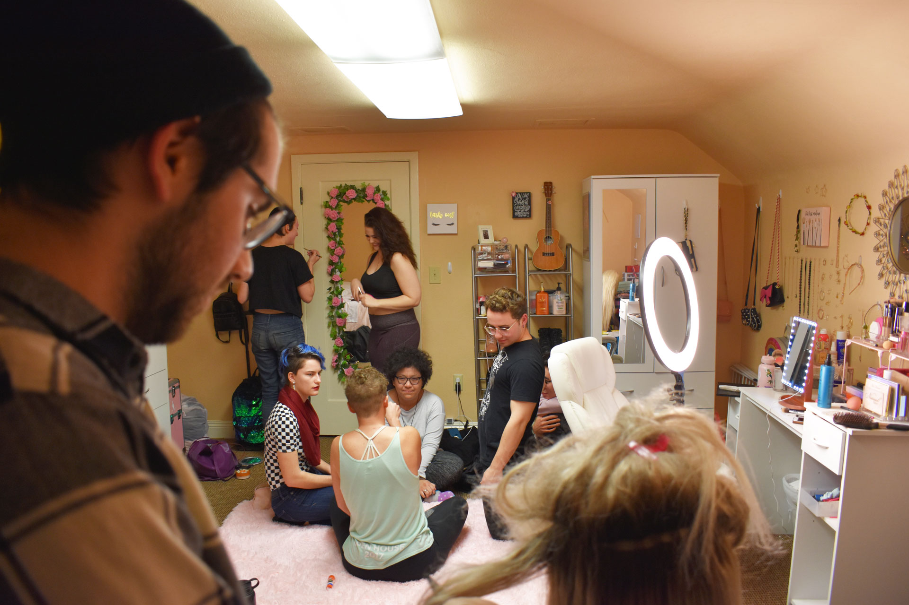
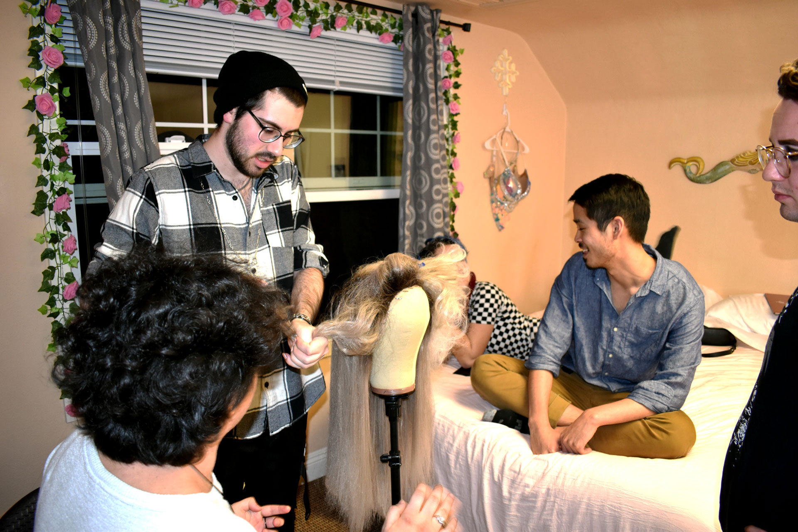
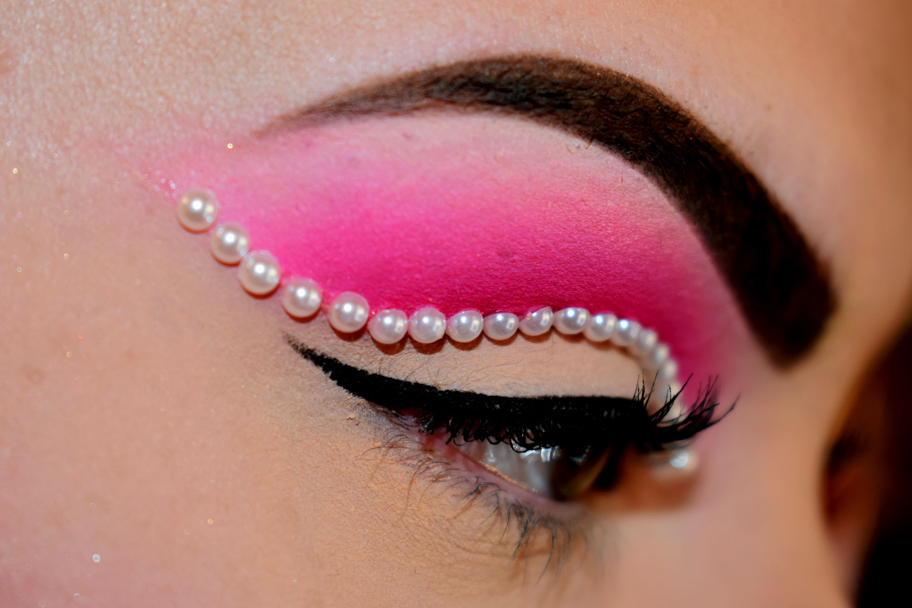
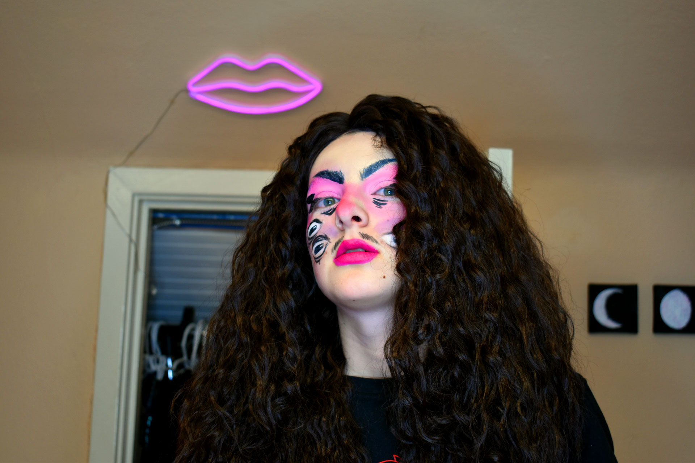
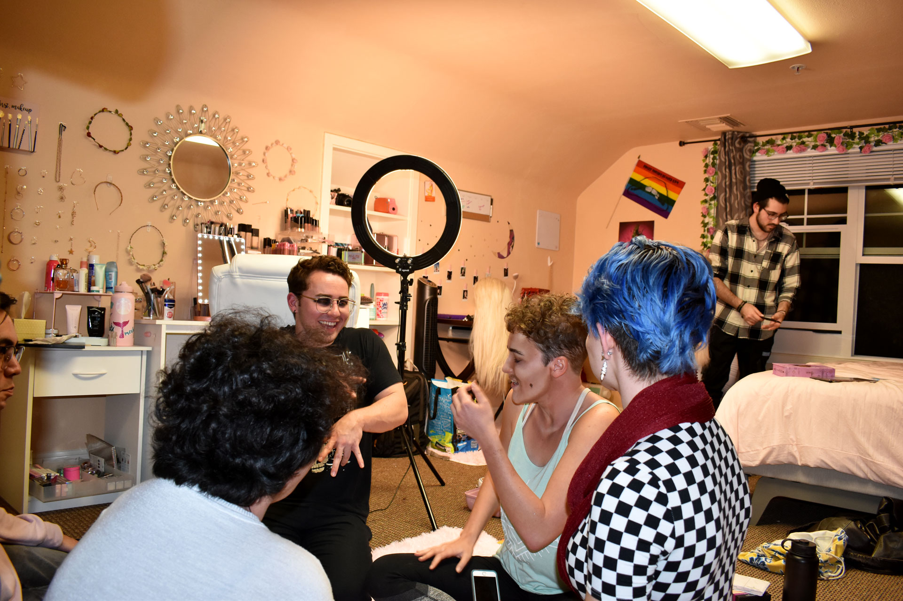
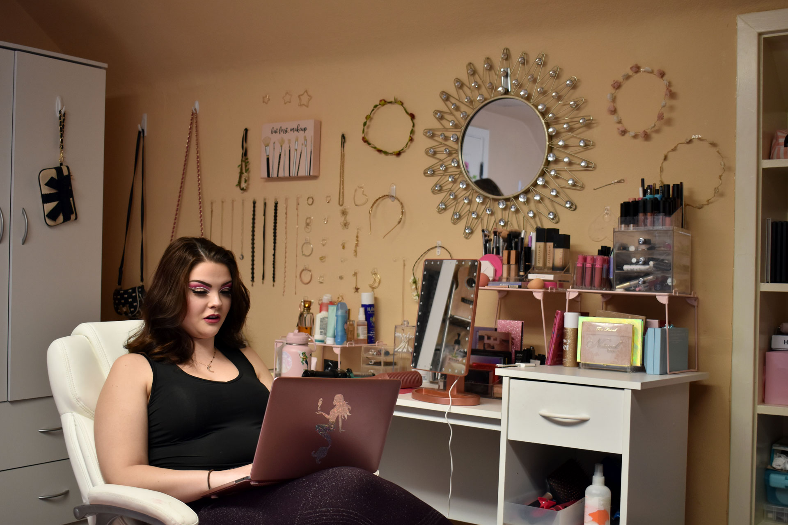
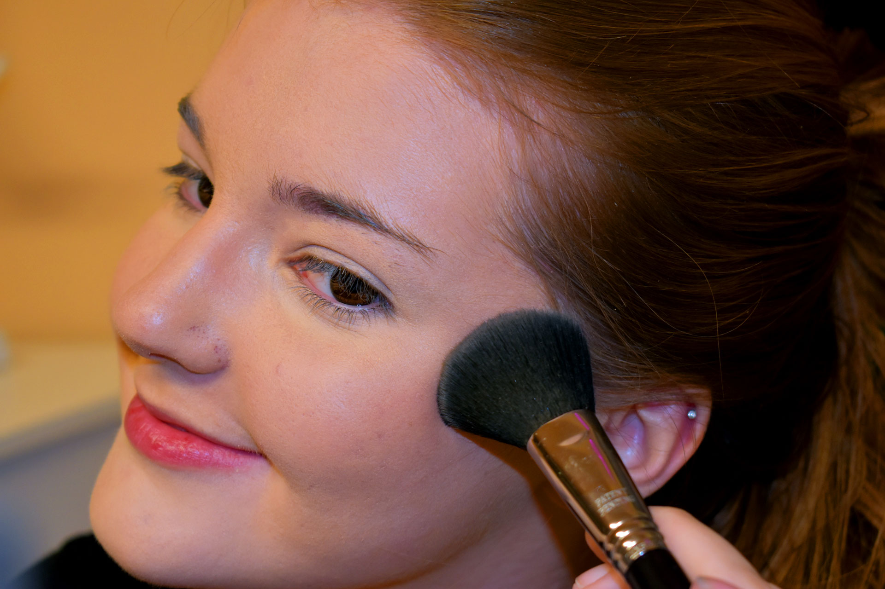
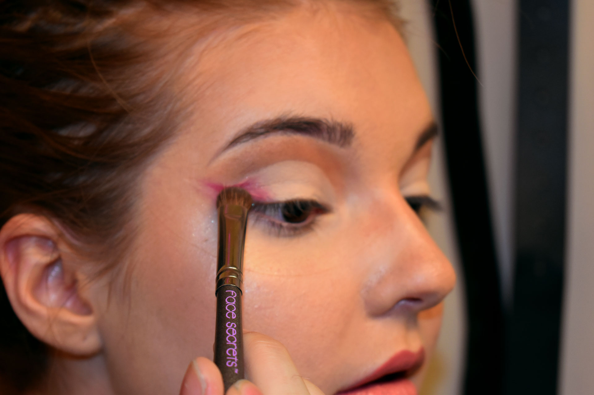
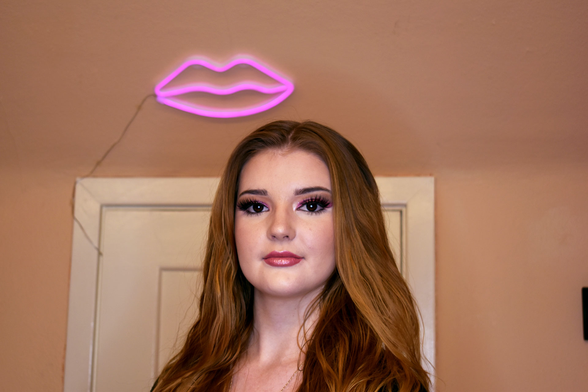
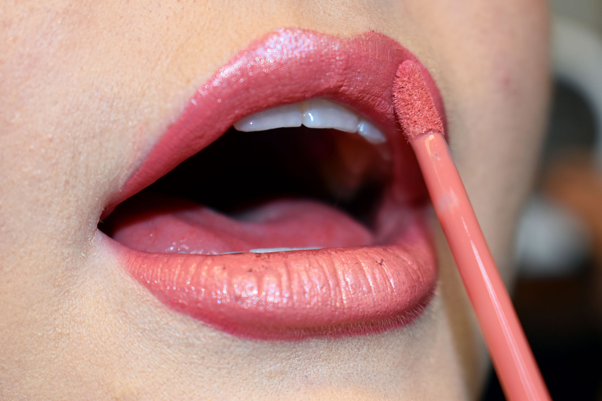

1 / 10

The Cal Poly Drag Club hosts its bi-monthly paint night in downtown SLO. Paint nights offer opportunities for members to bond and seek advice/help with anything from sewing outfits all the way to styling wigs and doing makeup. Club president Lewis Goodman, also known as Nova Caine, a fifth year industrial engineering major commented on the purpose of paint nights, saying that they mainly serve to “foster an environment of sisterhood, fun and acceptance while teaching newer queens the basics of drag.”
2 / 10

Goodman steams his wig in order to straighten and detangle it as the show approaches in just 15 days (February 22nd). “This wig has been through a lot. She’s seen it all and she could definitely use a trim but she's been with me since the beginning” says Goodman.
3 / 10

Tatum Jessica, a fourth year theater major completes her look by placing pearls along her eyelid crease. “I am always inspired by mermaids and their beauty and I just wanted to give you under the sea vibes with the pearls but still make it very soft and feminine because that is true to who I am” says Jessica. Jessica has been a stage manager for the drag club for two years and hosts a lot of the paint nights at her house downtown.
4 / 10

Alison O’Neill, known in the drag community as Chief Queef stares into the camera with their signature makeup look. “Doing drag allows me to express some of what life is like with autism, mental illness, and being trans. It is more than just a little cathartic. Being able to turn something that is making my life a living hell into something constructive, artistic and maybe even good is eye opening to me” says O’Neill.
5 / 10

After the makeup is all finished, it’s “nothing but fun, games and lots and lots of queer shenanigans” says Karl Zieber, third year mathematics major. Members of the drag club, Zieber (left) and Hannah Hazelbaker (right) have a good laugh after watching Fergie sing the “Star Spangled Banner” at the NBA All-Star game in 2018.
6 / 10

Jessica, the host of the paint night sits back and searches videos of queer artists performing for the club to watch once everyone has finished their makeup and tasks for the night. The members watch and discuss ideas surrounding performances at the upcoming show, creating an environment of creativity.
7 / 10

Danielle Hyde, a second year communications major, puts on drag for her very first time. “I’m nervous to perform,” says Hyde “I’ve never done anything like this and I don’t know what I’m supposed to do or if it is something I can do.” Hyde was introduced to drag her freshman year at a Drag 101 social hosted in Muir Hall by resident advisor Zieber.
8 / 10

Danielle Hyde, a second year communications major, puts on drag for her very first time. “I’m nervous to perform,” says Hyde “I’ve never done anything like this and I don’t know what I’m supposed to do or if it is something I can do.” Hyde was introduced to drag her freshman year at a Drag 101 social hosted in Muir Hall by resident advisor Zieber.
9 / 10

Danielle Hyde, a second year communications major, puts on drag for her very first time. “I’m nervous to perform,” says Hyde “I’ve never done anything like this and I don’t know what I’m supposed to do or if it is something I can do.” Hyde was introduced to drag her freshman year at a Drag 101 social hosted in Muir Hall by resident advisor Zieber.
10 / 10

A quick swipe of a liquid lipstick transforms the lips color completely and ties the whole look together, reminding us all what drag is truly about. “Drag is not about competition, or about winning” says Goodman “it’s about doing what you love and changing the world with your art. Anyone can wear lipstick, but it's what you do while you’re wearing the lipstick that truly matters.”
❮
❯